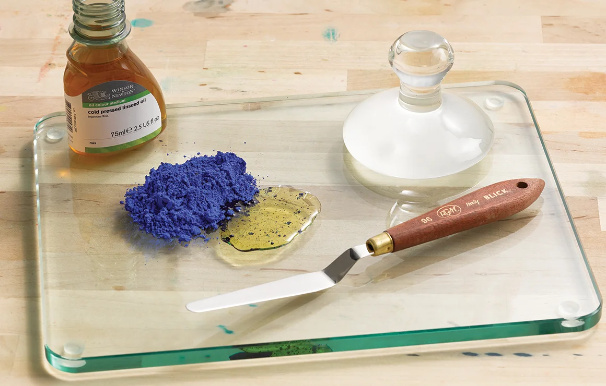

My Comments on the State of the World; Ava's blog about Sustainable Practices
10/16/2024 - Ways of Sustainable Creating: Natural Paint Alternatives

Art is such a universal language. The true meaning of art lies separately between the creator and the viewer. It can be different to anyone that observes it. From sculptures, to printmaking, to drawing, to painting (and many other forms of design), art is not always “good” for ourselves or the environment. Art is such a healthy way of expressing emotions and providing oneself with that sense of release, so why are the materials we are using to make visual representations of ourselves and our emotions harming us in the long run? In this blog post, I will dive deeper into the moral issues with the art materials on the market. More specifically, I will be discussing a topic that has interested me for a long time: creating one's own natural paints, derived from natural pigments.
Paint is typically created from two things: a pigment and a vehicle. A pigment is where the color itself stems from, it holds the hue of the paint. This can be natural or synthetic, and oil, water, or synthetic based. Think about all of the pigments we see in day to day life though- the colorful leaves, flowers, green grass, tree bark, different food and plants; even blood has a distinct red pigment(not to be morbid LOL). When I previously said a “vehicle,” I am referring to a substance that helps allow the pigment to become a paintable paste. This is usually also called a binder and solvents or additives are used too, but it really depends on the type of paint. For oil paints, a pigment is found and a type of oil is added as its vehicle; many use linseed oil but you can also use walnut, grape seed, soybean, etc). Sometimes additives are thrown in the mix as well to get different effects of the paint. I remember when I took an oil painting course last year, we used marble dust mixed into the binder (which was linseed oil) and we coated the entire canvas before starting the painting in order to speed up the drying time between each layer; if you have ever tried oil painting you will find that it is a long a tedious process given how long oil takes to dry, each layer can take days to weeks. You must be careful with your proportions however, because too much marble dust can create cracks when it does dry- this can either add a unique texture or be an unwanted mistake. For acrylic paints, the vehicle is typically some type of resin or binding substance and water as the solvent, which allows the pigment to stick onto a surface. The binder is usually an acrylic polymer chemical compound, and dries much faster in comparison to oil. In other words, it can affect the painting outcome and process in terms of how quickly it dries, how it spreads, how thin or thick it is, etc. Solvents are similar to binders and are added depending on the type of paint as well; they can help dissolve the pigment and binder, and help make the base of the paint. These can also impact the structure and texture of the paint similarly to the binder, but are not always necessary.
There is such a high variety of paints, and it may be overwhelming when picking one out. Typical paints on the market, paints you see when you go to the art store, are usually synthetic and low quality with many chemical additives, unless you have a large budget to buy higher quality ones. Acrylic paints, though very convenient and easy to use, are actually terrible for the environment, and therefore for ourselves. They are polymer based, essentially plastic, and when we dispose of them they are usually going down the drain directly into our waterways. And we know how hard microplastics are to filter out and dispose of. It really is upsetting that there are so many negative externalities of the paint making process. By-products of making paints can easily infiltrate the natural environment, especially when not disposed of correctly. This is why it is very important to be cautious of your own disposal of leftover art materials like paints, that are directly polluting our Earth. Art shouldn’t be harmful, it is a beautiful way in which we express ourselves so why are we doing so in a manner that is harming us at the same time? I find this ironic.
With this, I introduce the concept of making your own paint right from your backyard! As I mentioned previously, there are so many pigments we see in our every day, natural environment. Even if you live in the city, there are leaves outside or rocks around, or even trash you could use to construct something unique and creative! This could help express the concept of pollution as well. Anyways, I have always found the other concept of making sustainable art interesting. Someday I would like to go to the beach, fill a cup of water or bring a type of oil, and find soft rocks that hold pigment. There are many natural components of nature that are brightly colored, and can be used for other purposes! To elaborate on this, you can find different types of rocks that are less hard than others, and use harder stones or objects to crush them up into a power, I would recommend using a mortar and pestle or some other means of breaking it up, then mixing it with your vehicle to be as even and smooth as possible. I would also think of using leaves, pine cones, bark, pine needles, even dirt or grass! Sand might even add a cool texture, you never know what happy accidents can come along the way from trusting and enjoying the process and the unknown events that may occur along the way of painting; it is a journey in itself! I think connecting this with the natural world around us, and making beautiful art with what the Earth provides us every day without creating any waste is an amazing and rewarding thing.
With art, I love the idea of how our creations with our own bare hands can contribute to making the world a better and more sustainable place. Art should not be a pollutant on earth, since it is merely a reflection of ourselves and the world and it is almost humorous that we are creating these beautiful ideas that are reflections or expressions of ourselves and yet they are made from materials that are polluting and harming us directly. I think that simply the process of creating your own pigments can foster a really high level of intimacy with ourselves and what we create on this planet. Art is less about the final outcome of what you make, and more so focused on one's own process and imaginative journey. As creators and artists on this Earth, we must apply our creativity not only to our ideas but in the way we execute and share them as well. Earth is our home, so why support the downfall of it when we simply want to paint how life makes us feel? Art should make the world a better place, not a more polluted one.
10/9/2024 - Ways of Sustainable Living: Cob Houses
Cob houses have been around for centuries. Many builders throughout history, from ancient times to this very day, use methods such as this. Being one of the first building mechanisms in the evolution of humanity, there is a ton of history behind the cob house structure. The first ones were seen in as early as the 13th century, and were originally found in England and the UK. This technique quickly spread to different parts of the world, and is now the base of many ancient architectural structures that still stand today! These buildings can also be resistant to fire, certain insects, fungus, etc., in contrast to our modern housing.
The cob foundation is very easy to make and construct with, as it consists of 3 simple ingredients: mud or clay, sand, and straw. The combination of these when they are accurately proportionate should result in a thick, clay-like paste that is sculptable and suitable for building up, and hardens like cement. Between the layers of the mixture, or between the “walls,” homes are insulated with hay or straw stacks, and they remain cool in the summer and warm in the winter; making these homes suitable for most climates. Once constructed, it can take about 6-9 months to “cure” or harden and be livable. The whole process can take up to a couple years, but is not much different from a regular wood and cement home. I think this is worth it, with the time, energy, and low finances it takes to build these, the total costs can heavily be outweighed by the benefits.
You may think this is relatively rustic, but it is not much different from a standard built home. Bugs can get in no matter what you do. Cob mix is solid, unless poorly built, the walls are essentially seamless, rounded and can be sculpted around any surface or appliance (window, door), which makes this building style very flexible to your dream home ideas. These houses are simple, but with a solid design plan can be as extravagant or intricate as one wants! I have seen various types of designs, and some people even add artwork sculpted out of the cob mixture on the house side of the home; who does not want built in artwork! Compared to standard wood and cement houses, the cob home does not take nearly as much time, energy, or money to build. And, they can be made with all sorts of low cost, or even free recycled materials- you just need to gather them! Many cob home builders may use things like old tires to help them create a more structured design, thrifted windows (of any size since you can simply mold the cob mix to any desired shape or scale), even old different colored wine bottles to create unique lighting effects inside as a window or light source. You may not even need to buy large, bulky (physically and financially) furniture like a couch that may or may not fit through the floor… you can sculpt seating areas right from the mixture, and cover with blankets or cushions! This would help you save a big chunk of money, as the costs of building a nice, near 1000 square foot cob home, completely designed and constructed by the way of your choosing, would be equal to or less than just the down payment of a regular house. So, if you still think cob homes are too rustic, think again. They can include pretty much anything you already have space for in your home, like electricity, plumbing, heating or a furnace; and even some extra components, like built-in shelving, furniture, etc., as well as a space unique to any other house on the market!
Off-grid living has always interested me; a lot of days I find myself thinking about how many “luxuries” we have in America especially, and what the government is actually supplying us in terms of goods that benefit our well-being. Living in the U.S. can be difficult at times; it feels so hard to simply care about the state of our world, when so much around us is polluting it, sometimes it is inescapable. Since we do not have any policies that ban genetically modified food, regulations on plastic use and production, and little effort to ensure our air and water sources are clean, it can be difficult to feel like we are pursuing a healthy life. So for me, it helps knowing that there are ways to combat this, and these ways have been used for centuries! Residing in a cob home is yet another way one can be more conscious of their own environmental footprint. Taking care and being conscious of our home is just as important as it is to do so with ourselves! Sometimes, we must resort to our roots to be able to move forward as a collective.
I started thinking about the concept of success. How does society define it, and how does that differ from what I think it should be? Can everyone’s version of it be different, or do I just have to play along in the game that does not give me much benefit? I will not say I am not grateful for my life- I am very lucky to be where I am in all aspects and I have a lot more than most. But that is the thing- what do I need that I do not already have? Why are we striving for more THINGS rather than more happiness and light in the world? A big house, a fancy car, ridiculously expensive clothes that deteriorate within a year. Why do all of these things mean so much to us, to society as a collective whole?
Because I always have these thoughts in the back of my brain, it is sometimes hard to move forward. However, seeing eco-friendly options becoming more popular and talked about helps me feel better about the state of the world, and how my future could turn out. I would love to someday have a self-sustaining home that I could completely design myself! Being conscious of the environment is being conscious of yourself, and there are many steps one can take to head in this direction. The world deserves better, as it provides so much for us and we take much more than we need. Maybe the key to success is not material abundance, but internal abundance and material simplicity.
 Cob houses have been around for centuries. Many builders throughout history, from ancient times to this very day, use methods such as this. Being one of the first building mechanisms in the evolution of humanity, there is a ton of history behind the cob house structure. The first ones were seen in as early as the 13th century, and were originally found in England and the UK. This technique quickly spread to different parts of the world, and is now the base of many ancient architectural structures that still stand today! These buildings can also be resistant to fire, certain insects, fungus, etc., in contrast to our modern housing.
Cob houses have been around for centuries. Many builders throughout history, from ancient times to this very day, use methods such as this. Being one of the first building mechanisms in the evolution of humanity, there is a ton of history behind the cob house structure. The first ones were seen in as early as the 13th century, and were originally found in England and the UK. This technique quickly spread to different parts of the world, and is now the base of many ancient architectural structures that still stand today! These buildings can also be resistant to fire, certain insects, fungus, etc., in contrast to our modern housing.
 You may think this is relatively rustic, but it is not much different from a standard built home. Bugs can get in no matter what you do. Cob mix is solid, unless poorly built, the walls are essentially seamless, rounded and can be sculpted around any surface or appliance (window, door), which makes this building style very flexible to your dream home ideas. These houses are simple, but with a solid design plan can be as extravagant or intricate as one wants! I have seen various types of designs, and some people even add artwork sculpted out of the cob mixture on the house side of the home; who does not want built in artwork! Compared to standard wood and cement houses, the cob home does not take nearly as much time, energy, or money to build. And, they can be made with all sorts of low cost, or even free recycled materials- you just need to gather them! Many cob home builders may use things like old tires to help them create a more structured design, thrifted windows (of any size since you can simply mold the cob mix to any desired shape or scale), even old different colored wine bottles to create unique lighting effects inside as a window or light source. You may not even need to buy large, bulky (physically and financially) furniture like a couch that may or may not fit through the floor… you can sculpt seating areas right from the mixture, and cover with blankets or cushions! This would help you save a big chunk of money, as the costs of building a nice, near 1000 square foot cob home, completely designed and constructed by the way of your choosing, would be equal to or less than just the down payment of a regular house. So, if you still think cob homes are too rustic, think again. They can include pretty much anything you already have space for in your home, like electricity, plumbing, heating or a furnace; and even some extra components, like built-in shelving, furniture, etc., as well as a space unique to any other house on the market!
You may think this is relatively rustic, but it is not much different from a standard built home. Bugs can get in no matter what you do. Cob mix is solid, unless poorly built, the walls are essentially seamless, rounded and can be sculpted around any surface or appliance (window, door), which makes this building style very flexible to your dream home ideas. These houses are simple, but with a solid design plan can be as extravagant or intricate as one wants! I have seen various types of designs, and some people even add artwork sculpted out of the cob mixture on the house side of the home; who does not want built in artwork! Compared to standard wood and cement houses, the cob home does not take nearly as much time, energy, or money to build. And, they can be made with all sorts of low cost, or even free recycled materials- you just need to gather them! Many cob home builders may use things like old tires to help them create a more structured design, thrifted windows (of any size since you can simply mold the cob mix to any desired shape or scale), even old different colored wine bottles to create unique lighting effects inside as a window or light source. You may not even need to buy large, bulky (physically and financially) furniture like a couch that may or may not fit through the floor… you can sculpt seating areas right from the mixture, and cover with blankets or cushions! This would help you save a big chunk of money, as the costs of building a nice, near 1000 square foot cob home, completely designed and constructed by the way of your choosing, would be equal to or less than just the down payment of a regular house. So, if you still think cob homes are too rustic, think again. They can include pretty much anything you already have space for in your home, like electricity, plumbing, heating or a furnace; and even some extra components, like built-in shelving, furniture, etc., as well as a space unique to any other house on the market!
 Off-grid living has always interested me; a lot of days I find myself thinking about how many “luxuries” we have in America especially, and what the government is actually supplying us in terms of goods that benefit our well-being. Living in the U.S. can be difficult at times; it feels so hard to simply care about the state of our world, when so much around us is polluting it, sometimes it is inescapable. Since we do not have any policies that ban genetically modified food, regulations on plastic use and production, and little effort to ensure our air and water sources are clean, it can be difficult to feel like we are pursuing a healthy life. So for me, it helps knowing that there are ways to combat this, and these ways have been used for centuries! Residing in a cob home is yet another way one can be more conscious of their own environmental footprint. Taking care and being conscious of our home is just as important as it is to do so with ourselves! Sometimes, we must resort to our roots to be able to move forward as a collective.
Off-grid living has always interested me; a lot of days I find myself thinking about how many “luxuries” we have in America especially, and what the government is actually supplying us in terms of goods that benefit our well-being. Living in the U.S. can be difficult at times; it feels so hard to simply care about the state of our world, when so much around us is polluting it, sometimes it is inescapable. Since we do not have any policies that ban genetically modified food, regulations on plastic use and production, and little effort to ensure our air and water sources are clean, it can be difficult to feel like we are pursuing a healthy life. So for me, it helps knowing that there are ways to combat this, and these ways have been used for centuries! Residing in a cob home is yet another way one can be more conscious of their own environmental footprint. Taking care and being conscious of our home is just as important as it is to do so with ourselves! Sometimes, we must resort to our roots to be able to move forward as a collective.